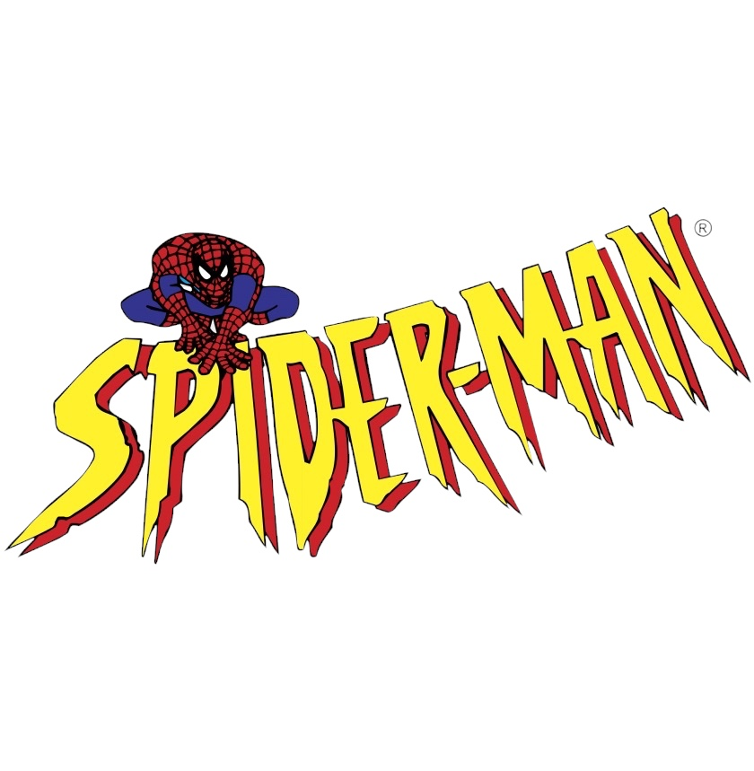

“Spidey swings into media.”
Media Gallery
Enjoy Spider-Man themed images, fan art, and content inspired by comics, movies, and games.
From vibrant reinterpretations by fans to official artwork from decades of storytelling, this gallery celebrates the legacy and creativity surrounding the Spider-Verse.
Spidey never leaves fans without content 🖼️